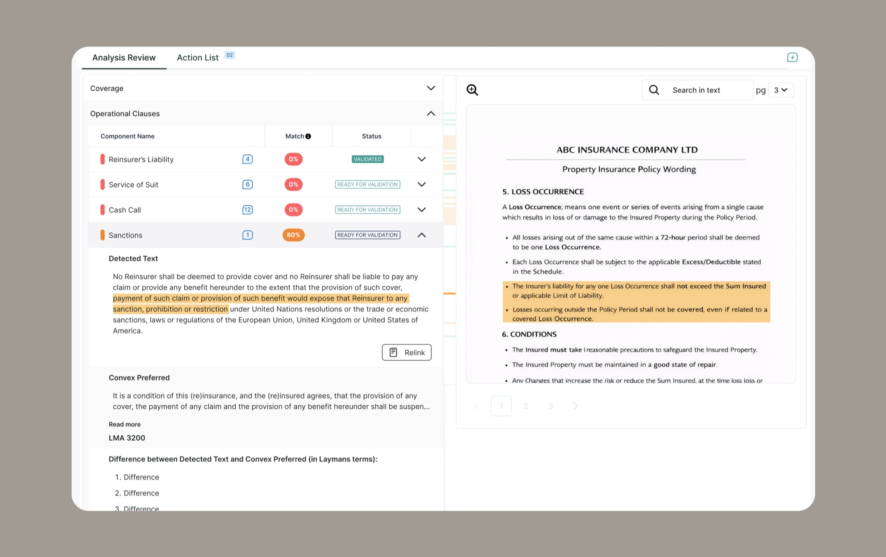
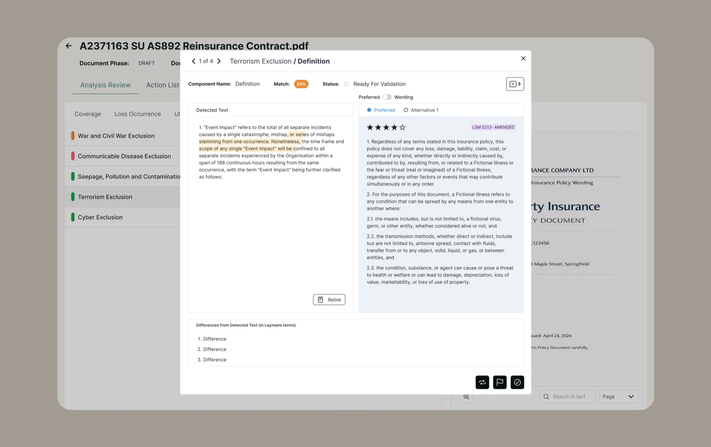
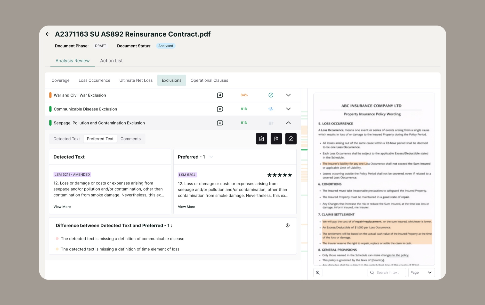
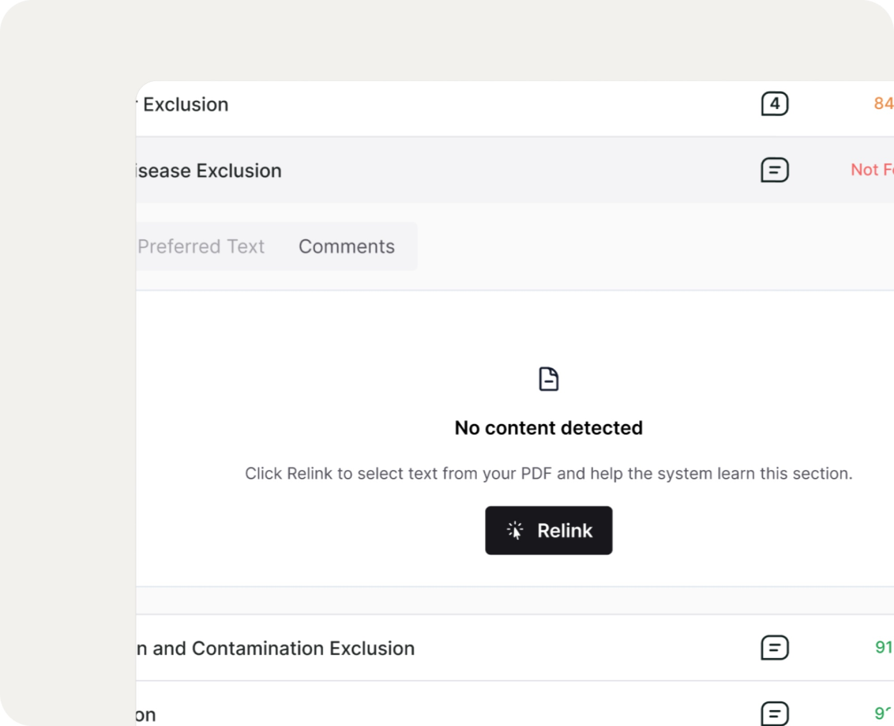
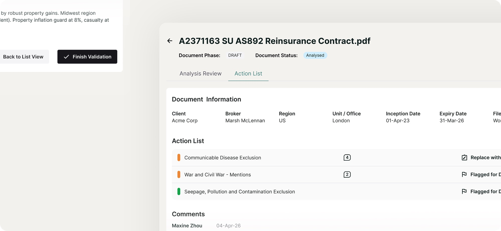

- AI / ML
- B2B SaaS
- Workflow
- InsurTech
Analyser
AI-Augmented Contract documents Analysis Platform
Designed trust into AI-powered contract analysis for high-pressure insurance workflows.
Overview
My Role
Product Designer (Sole Designer)
Key Outcomes
- Streamlined contract review during critical renewal periods
- Designed Continuous AI Training in workflow that felt natural to users
- Built user trust through transparent AI verification design
Additional Complexity
- Remote collaboration with a dev team in France
- Tech constraints: LLM latency and inability to build a specific layout
- Ecosystem consistency: aligned with two products and fed insights into a core product
The Product
An internal underwriting application for insurance teams to review and triage submissions, manage workflows, and make faster and more confident decisions
Fragmented, High-Stakes Workflows
During busy renewal periods, underwriters analyse hundreds of reinsurance and insurance contracts under tight deadlines. Their workflow is chaotic—constantly switching between:
- Contract PDFs
- Email chains
- Notes documents
- Slack conversations
- Dropbox files
Need a solution that could
- Make contract review instantaneous, not time-consuming
- Simplify checking against complex underwriting rules
- Reduce compliance risk and financial exposure
How might we accelerate contract analysis without compromising thoroughness, accuracy, or user confidence in AI-generated insights?
Research and Discovery
I conducted stakeholder interviews with underwriters and product managers to understand their workflows, pain points, and needs during high-pressure renewal periods.
Key Insights that shaped design
- Navigation must be instantaneous and mirror document’s natural flow
- Users question AI accuracy, design should communicate transparency and verifiable sources
- AI assistance should feel like productive work, not extra overhead
Design Evolution
I went through three distinct layout approaches, testing each with PMs and users to land on the optimal information hierarchy that also fit within the dev team's technical constraints.
- 01

Early Prototype
This is what the UI looked like when I first joined the project.
#Christmas tree #Unclear IA #Long scroll #Content gets lost - 02

Explored Modal-Based Details (users’ fav)
Rebalanced the information hierarchy across multiple layers of detail
Consolidated all detailed information in a modal to minimise visual noise
(blocked by dev team due to tech constrains) - 03

Hybrid Tabs + Accordion (final)
Parent accordions organised by document section (mirroring contract order)
Enable users to do side-by-side comparison with one click
Design Decision
Detected wording is compared against preferred language in a clear side-by-side view with concise risk summaries, enabling decisions in seconds.
AI-Powered Comparison with Source Verification
Human-in-the-Loop Machine Training
Underwriters can quickly verify or relink AI-detected text within the “Text” view, embedding feedback directly into their normal review workflow.

Natural Review Workflow
Key validation actions are surfaced at the point of review, enabling one-step decisions and preserving underwriters’ analytical flow.
Action List for Faster Collaboration
Instead of jumping between components to recall what needs discussion, underwriters get a consolidated view of every flagged item, suggested alternative, and comment at a glance. When everything checks out, a single 'Finish Validation' click closes the loop.
